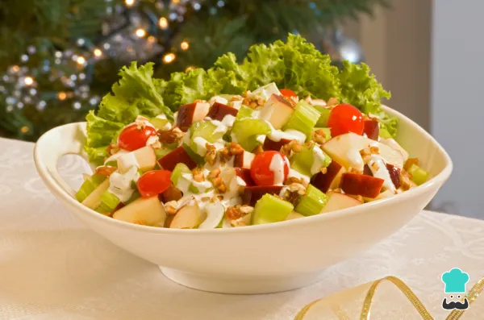

Ensalada navidena de manzana Receta

Descripcion
La ensalada de manzana navidena es un buen menu para una navidad mas saludable y sabroso, ideal como acompanamiento.
Ingredientes para la ensalada navidena de manzana
- 2 kilogramos de manzanas.
- 1 kilogramo de zanahoria.
- 1 lata de duraznos o melocotones en almibar.
- 1 lata de pina en almibar.
- 1/2 lata de cerezas en almibar.
- 100 gramos de nueces quebradas.
- 100 gramos de pasas.
- 1/2 litro de crema entera.
- 1 lata de leche condensada.
Pasos a seguir de la receta
- Para empezar con la receta de la ensalada navidena de manzana primero debes preparar el aderezo de la ensalada
de manzana navidena. Para ello, mezcla la crema entera con la leche condensada y bate hasta que espume un poco.
- A continuacion, pica en cubos pequenos las frutas en almibar (excepto las cerezas) y anadelas a la crema. Luego,
pon las nueces y las pasas, mezcla bien y deja reposar la ensalada navidena de frutas. Si consideras que la crema
esta muy espesa, agrega un poco del almibar de los duraznos para que se torne mas liquida. Esta mezcla le dara
un toque exquisito a esta ensalada de Navidad.
- Mientras reposa el aderezo de la ensalada de manzana navidena pela y ralla las zanahoria y apartalas en un
recipiente. Ahora, pela las manzanas y cortalas en cubos, procura que sean un poco mas grande que los cubos
de la fruta. Anade la zanahoria rallada y las manzanas a la crema, mezcla bien y listo.
Truco>si quieres, puedes anadir otros ingredientes como apio, tomates cherry o
lechuga a tus ensaladas navidenas.
- Al servir, adorna con una o dos cerezas.
Fuente de la Receta